Diffusion models have demonstrated remarkable success in generating high-quality samples across diverse domains. However, most existing methods operate in fixed Euclidean spaces and lack mechanisms to control the smoothness of generated outputs. We propose Adaptive Hilbert Diffusion Models (Adaptive-HDM), a novel framework that formulates diffusion in an infinite-dimensional Hilbert function space induced by a Gaussian process kernel. By treating the kernel length-scale (lens parameter ℓ) as a controllable hyper-parameter, our model enables users to explicitly regulate the smoothness of generated continuous functions at inference time — ranging from highly smooth to rapidly varying trajectories — without retraining. We apply Adaptive-HDM to text-conditioned human motion generation and demonstrate that the proposed controllability is orthogonal to semantic fidelity: the generated motions faithfully follow text prompts while exhibiting the desired smoothness level. Quantitative evaluations confirm that Adaptive-HDM matches or surpasses existing baselines in generation quality metrics, while uniquely offering smoothness controllability that prior work cannot provide.
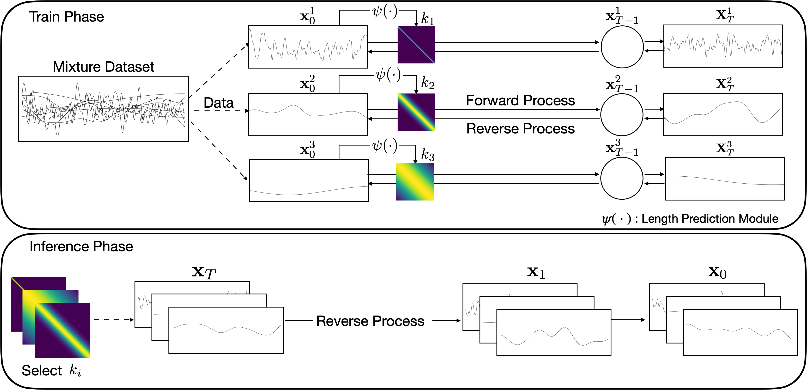
Adaptive-HDM formulates the forward and reverse diffusion processes on a Hilbert function space governed by a Gaussian process kernel. The lens parameter ℓ controls the smoothness of the kernel, thereby allowing users to continuously interpolate between smooth (small ℓ) and sharp (large ℓ) generated outputs.
By adjusting the lens parameter ℓ, users can continuously control the smoothness of generated motions — a capability unique to Adaptive-HDM.
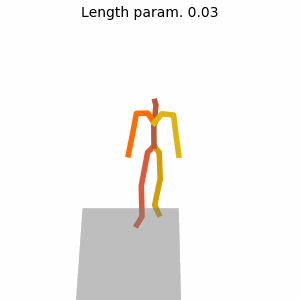
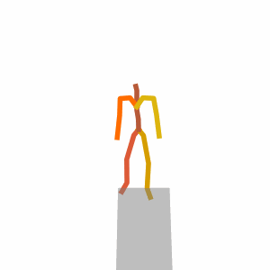
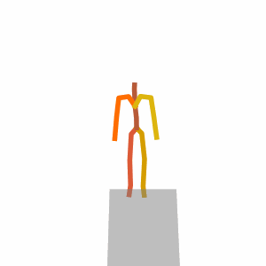
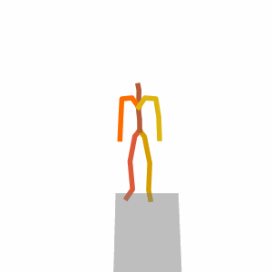
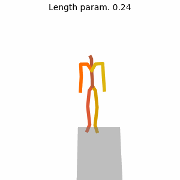
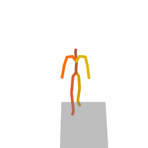
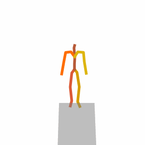
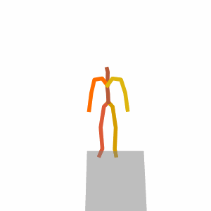
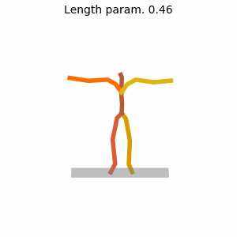
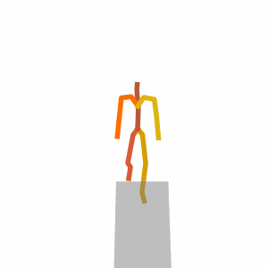
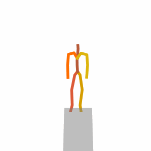
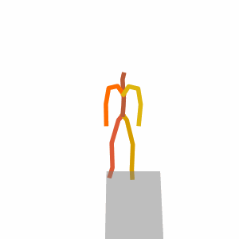
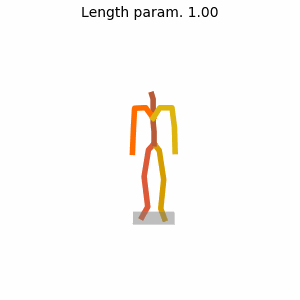
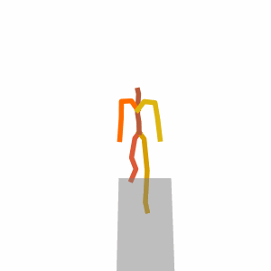
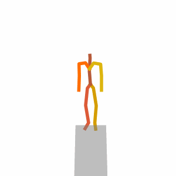
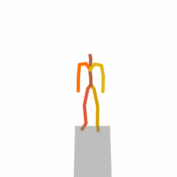
Existing text-to-motion models generate a single fixed style of motion for the same text prompt. Adaptive-HDM introduces the lens parameter ℓ that lets you select any smoothness on demand — no retraining needed.
Fixed smoothness — no knob to turn.
One style per prompt.
only one smoothness level available
Tune ℓ to get the smoothness you want — same prompt, different styles.
ℓ = 0.03
ℓ = 0.24
ℓ = 0.46
ℓ = 1.00
@article{byun2025adaptivehdm,
title = {Adaptive Hilbert Diffusion Models for Controllable Smoothness in Continuous Function Generation},
author = {Byun, Taehyun and Lee, Seulbi and Lee, Kyungjae and Hwang, Sangheum and Choi, Sungjoon},
year = {2025},
}